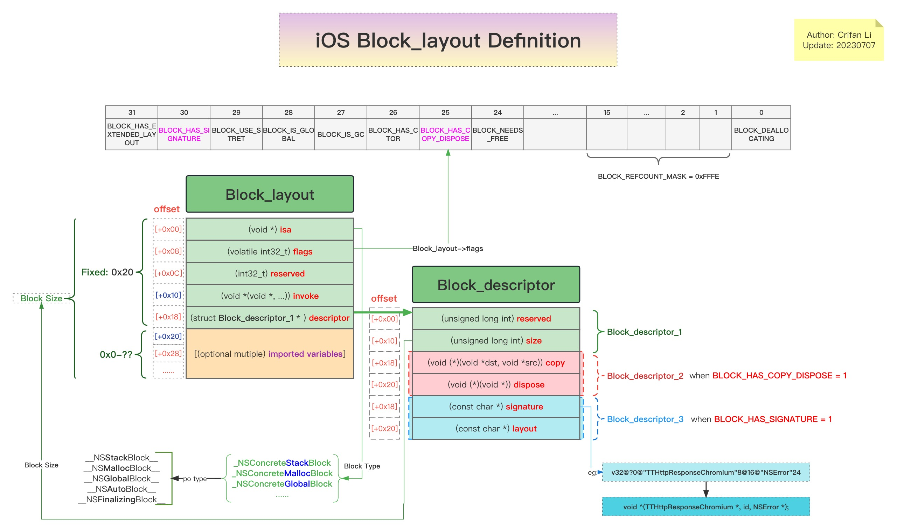
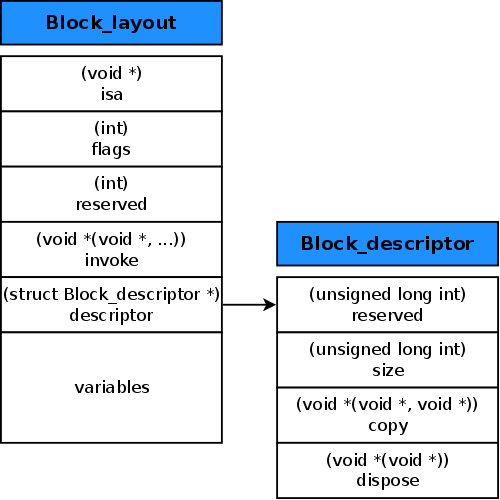

主页
1.1.
前言
1.2.
Block概览
1.3.
Block详解
1.3.1.
Block正向开发
1.3.2.
Block类型
1.3.3.
Block定义
1.3.3.1.
结构体定义
1.3.3.1.1.
内存结构布局图
1.3.3.2.
flags
1.3.3.3.
invoke
1.3.3.4.
descriptor
1.3.3.5.
imported variables
1.4.
Block分析实例
1.4.1.
YouTube逆向
1.4.2.
AwemeCore逆向
1.5.
Block心得
1.5.1.
动态调试Block
1.5.2.
相关objc函数
1.6.
附录
1.6.1.
参考资料
本书使用 HonKit 发布
内存结构布局图
Block定义的内存结构布局图
自己的详细图
离线查看

在线浏览
iOS的Block定义的结构图 | ProcessOn免费在线作图
别人的简单的图

results matching "
"
No results matching "
"